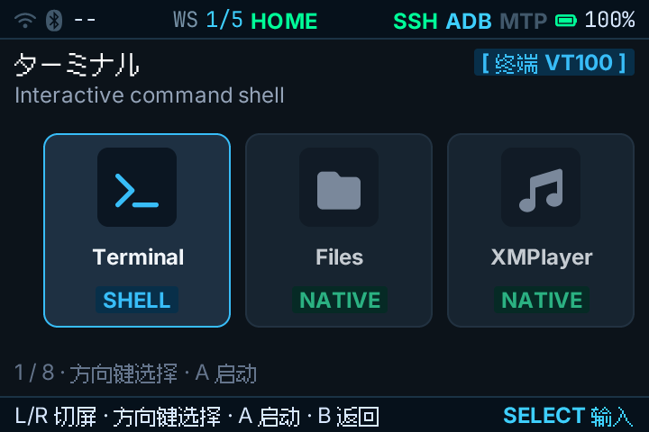
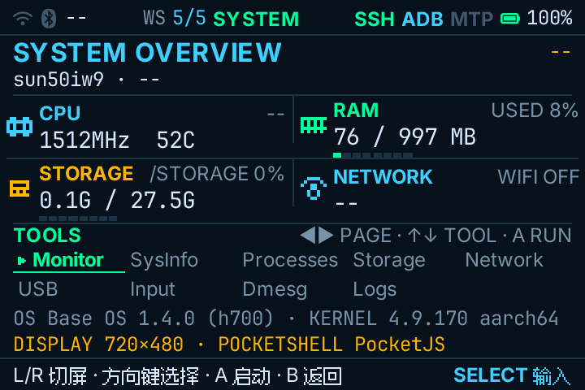

⌘
熟悉的开发方式
用 React、TypeScript 与 Node.js 构建系统界面和设备应用。
为掌机、电子阅读器与数字音乐播放器而设计。用熟悉的 JavaScript 与 TypeScript 技术栈，构建贴近设备的系统体验。
PJOS Linux 面向便携设备，其 Shell、应用与整体用户体验由 JavaScript / TypeScript 驱动。它把现代 Web 开发体验带入 Linux 设备开发，让开发者用成熟技术栈构建系统界面、设备应用和交互体验，无需从头学习复杂的 Linux 图形框架或平台专属模型。
用 React、TypeScript 与 Node.js 构建系统界面和设备应用。
同一套 Pocket Apps 面向不同设备与硬件平台，追求一致的运行体验。
结合 BaseOS、设备配置与硬件适配，把应用体验连接到真实 Linux 设备。
当前验证与探索状态如实标注；研究中的设备类型不代表已支持具体机型。
Anbernic RG34XX（Allwinner H700）已实机运行 PocketJS 启动器，包含卡片式 Launcher、设置、系统页与终端。
已验证 · RG34XX探索低功耗屏幕与阅读器交互的设备适配路径。BOOX Leaf3C 属于研究方向。
研究中 · 探索阶段探索面向便携音乐设备的应用与系统体验。Android DAP（如 FiiO M21）仍在研究阶段。
研究中 · 探索阶段Pocket Apps 经由 PocketShell 与统一 Runtime 接入系统服务和设备适配层。
应用层负责系统界面与设备交互，PocketShell 提供统一的系统入口。
Runtime 与服务层承接 JavaScript 应用与 BaseOS 能力。
设备适配层通过 DAL、BSP 与 board profile 连接具体硬件。BSP 体系与 Device Profile v2 正在设计中。
Anbernic RG34XX 首次启动证据，来源于 PJOS-LINUX 仓库的 2026-10-30 实机记录。


已在 Anbernic RG34XX（Allwinner H700）运行 PocketJS 启动器与基础系统界面。
BSP 目录体系、Device Profile v2、Capability / Feature、DAL 与 baseosctl 仍在设计和推进。
电子阅读器与 Android DAP 的适配仍处于研究探索阶段。